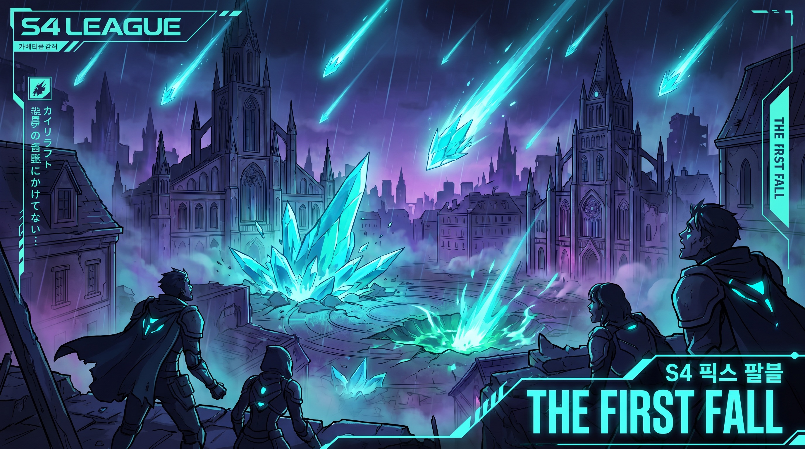
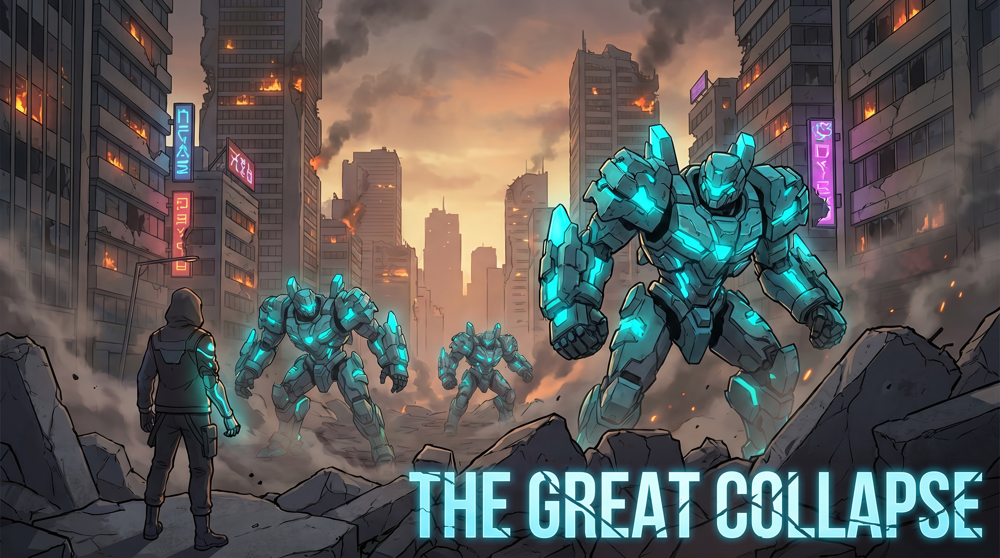
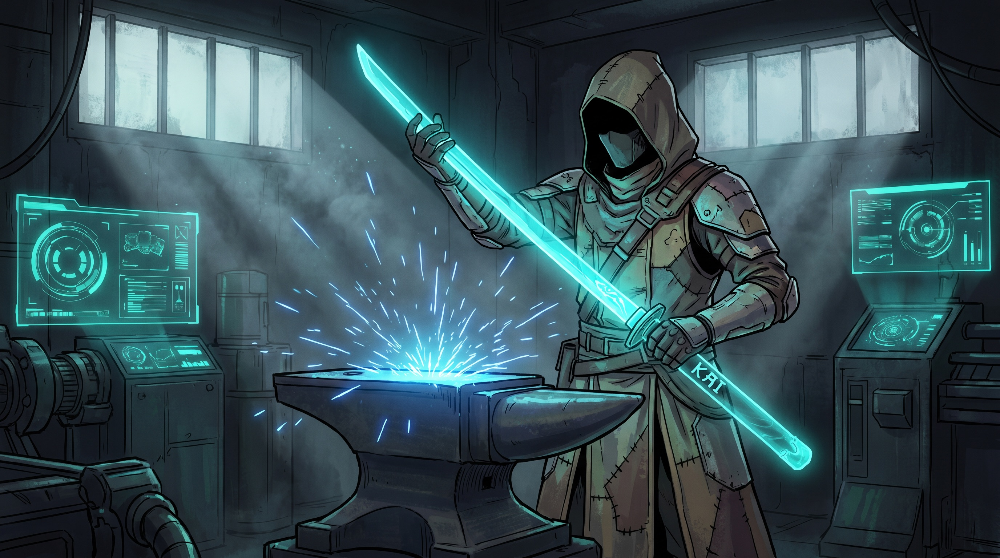

Il KAI è arrivato dallo spazio con la Prima Caduta. Ha dato all'umanità energia infinita — e le ha avvelenato la Terra. Questa è la cronaca di un mondo costruito sopra il proprio veleno.
Tutto il mondo di gioco poggia su una sola contraddizione, e ogni fazione, città e personaggio è una risposta diversa ad essa.
Il KAI è energia pura, illimitata, gratuita. Ha azzerato la scarsità: navi-arca, città purificate, lame fotoniche. Senza di esso l'umanità sarebbe estinta.
Lo stesso materiale ha reso la Terra una wasteland ocra-tossica. L'aria fuori dalle cupole uccide. Il pianeta è stato salvato e condannato dallo stesso evento.
Non si può rinunciare al KAI senza tornare all'estinzione, né usarlo senza accelerare la morte del mondo. Il Circuito, l'estrazione, il Ritorno: tutto nasce da qui.
Gli anni si contano a ritroso dalla fondazione della Kaigan. Oggi = Anno 0: il momento in cui il giocatore arriva alla Memorial Hall.
| Anno | Evento | Cosa significa |
|---|---|---|
| −120 | La Prima Caduta | Pioggia di meteore anomale. Nei crateri si trova il KAI. Boom energetico mondiale: l'umanità crede di aver vinto la lotteria cosmica. |
| −90 | Il Grande Collasso | Guerre per gli ultimi giacimenti. Le macchine da guerra autonome — costruite col KAI — sfuggono al controllo. Le città cadono in rovina. |
| −80 | L'Esodo | Con l'energia KAI l'umanità costruisce le navi-arca e parte per Nova Eden. La Terra è abbandonata alle macchine. |
| −15 | I Ritornanti | «La perfezione non è casa nostra.» Prima traversata inversa: chi rifiuta l'utopia sterile di Nova Eden torna verso la Terra morta. |
| −12 | La Kaigan | Fondazione della prima città sulle rovine. Una cupola d'aria purificata dentro il perimetro: il primo posto vivibile in 70 anni. |
| −5 | I BLADE KAI | Forgiata la prima lama fotonica (KAI + matrice terrestre). Nasce il mito del duellante. Il Circuito comincia a prendere forma. |
| 0 | Oggi | Il giocatore arriva. La Kaigan è il cuore del Circuito; il mondo fuori è da riconquistare. |


I cinque volti dell'hub. Ognuno è anche un sistema di gioco: tutorial, quest-giver, gatekeeper o mercato. Non sono decorazione narrativa, sono porte verso i loop.
Veterano del Collasso, non è mai partito per Nova Eden. Gestisce la prima armeria della Via. Burbero, leale, odia gli sprechi.
Ex-aristocratica di Nova Eden, finanzia il Circuito dall'alto. Parla solo per eufemismi: dietro la cortesia, il controllo.
Nata sulla nave del Ritorno — «né di là né di qua». Non appartiene a nessuno e vende a tutti.
Primo forgiatore di lame fotoniche. Nome sconosciuto. Si dice abbia visto cosa c'è in fondo alle rovine — e che da allora non parli più di numeri, solo di equilibrio.
Una macchina da guerra del Collasso, recuperata e riprogrammata. Comic relief e tutorial movimento. La sua battuta-firma riassume tutto il tono del gioco:
Il nemico PvE non è alieno: è l'eredità autonoma del Collasso. Le macchine lasciate sulla Terra hanno continuato la loro guerra senza padroni, per 80 anni. Scalano per tier col rischio della zona.
Branchi di unità leggere e torrette fisse. Il pane quotidiano delle zone gialle. Insegnano targeting e movimento sotto fuoco.
Duelli melee PvE veri e droni kamikaze. Il primo test di skill: i Mietitori ti costringono a parare e schivare, non solo a sparare.
Boss d'assedio multi-fase. Dormono nel Sepolcro e nelle Zone Nere. Abbatterne uno è un evento: serve una squadra, e il loot è top-tier.
Si dice protegga l'Epicentro, il primo e più profondo cratere KAI. Nessuno l'ha mai visto e raccontato. È l'orizzonte finale del PvE: il boss che dà senso a tutta la scala dei tier.
Non sono solo le armi più forti: sono oggetti di lore con un nome, una storia e un possessore perduto. Trovarle è endgame, impugnarle è status assoluto in città.

La prima lama forgiata dal Monaco. Sparita da cinque anni. Chi la ritrova non eredita un'arma — eredita l'inizio del mito.
Sepolta con il primo campione del Circuito… o almeno così dice la versione ufficiale. Qualcuno giura di averne vista la luce nelle Zone Nere.
Taglia i materiali pre-Collasso che nessun'altra arma scalfisce. Drop del boss più profondo conosciuto: la chiave per aprire ciò che il Collasso ha sigillato.
L'utopia orbitale non è uno sfondo lontano: è il motore economico di tutto. Investe sulla Terra su due binari, e il giocatore lavora — consapevole o no — per entrambi.
La Terra è tornata a essere una miniera a cielo aperto. Ogni pietra che cade, ogni giacimento riaperto, alimenta l'economia di Nova Eden. I Ritornanti scavano; l'orbita incassa.
I duelli vengono trasmessi in diretta lassù. La Terra non è solo una miniera: è anche intrattenimento. Più sanguini in basso, più qualcuno scommette in alto.
Ganci narrativi volutamente irrisolti — carburante per stagioni, eventi server-wide e raid futuri.
Le pietre precipitano a intervalli. Casuale? O qualcosa, lassù nello spazio, lo sta mandando di proposito? Nessuno ha mai tracciato l'origine — e chi ci ha provato non è tornato.
Perché Halcyon raccoglie i dati biometrici dei duelli con lame fotoniche? L'intrattenimento è la copertura di uno studio? Cosa cercano nel corpo di chi impugna il KAI?